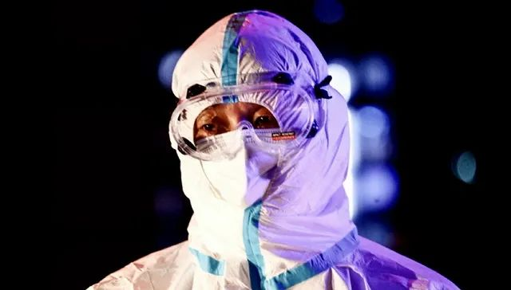
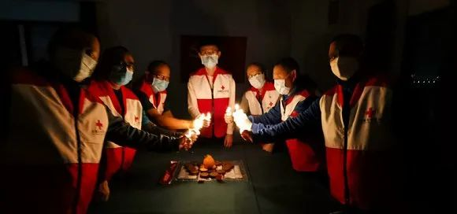

我从方舱出院啦~重返校园生活~
原文链接 备份链接 我等待着， 等风雨经过，等我们相见， 你微笑仰望着天， 我们一起种下心愿。 —— 张学友《等风雨经过》 文 / 麦兜妈 公号 / 兜爷麻麻不睡觉 方舱最后的时光 在我19号上篇文章发出时，是我进入方舱的第7天，当时我已 …

工作中的王海涛。摄影：付春来
记者：杨舒鸿吉
“
救护车内的方寸空间，是摆渡生命的“方舟”，有时候承载的是命运流转的重要瞬间。
”
每次出车转运新冠肺炎患者，对于武汉120救护车驾驶员王海涛而言，都是一次生命的“摆渡”。
王海涛是青海省红十字会备灾救灾和应急救护中心主任，作为一名职业救援专家，曾参与国内外地震、洪灾等多起灾害救援，不过这次支援武汉，他“跨界”当起了救护车驾驶员。
车轮滚滚，在一次次的运输使命中，王海涛感受着患者的痛苦，也分享着他们战胜病毒的喜悦。
以下是他的口述：
驾驶救护车在武汉空旷的街道上飞驰时，我无暇浏览这座都市璀璨的夜景。我的视野里，只有前方的道路和后视镜里的后舱。前者决定着这辆车的去向，而后舱的一举一动，哪怕是一声咳嗽，都决定着我车速的快慢。
我叫王海涛，青海省红十字会备灾救灾和应急救护中心主任。2月9日起，我和9位同事一起奔赴武汉，承担起新冠肺炎患者转运工作。其中，我与4名同事担任120救护车驾驶员。
我是一名职业救援队员，足迹曾踏遍汶川、玉树、雅安、鲁甸等灾区，并去过菲律宾、斯里兰卡以及古巴参与地震、洪灾、飓风等灾害的救援。此次疫情爆发之后，我也丝毫没有犹豫，请求参加这场病毒阻击战。
驾驶救护车的门槛并不高，一张A2的驾照，并且有大型车辆的驾驶经验足矣。所以从一名救援队员“跨界”到救护车驾驶员，对我来说并不难。
但在当病人运上车之后，我才发现疫情当下，这项工作的要求要复杂得多。
疫情爆发之后，中国红十字会紧急支援一批负压救护车，用以转运湖北各地尤其是武汉等重灾区的患者。同时在中国红十字总会驻湖北工作组的统一调度下，由四川、江苏、内蒙、青海、北京、上海、广西、吉林等省市红十字会专职人员和志愿者组成赈济和医疗救援队奔赴武汉，并承担起救护车队转运重症病患的职责。
抵达江城后的第三天，我接到了第一个转运病人的命令。
当天夜晚10点多，武汉同济医院中法新城院区打来电话，说有一位病患病情恶化，急需转运至重症监护室抢救。两个病区分别在该院的C栋与B栋，步行距离不超过500米。但是由于患者血氧饱和严重不足，稍有颠簸会造成病情进一步恶化，因此请求救护车将其送达。
我的车辆准时、准点出现在C栋楼下，患者也被同时运输至上车地点。
昏暗的灯光下，我看到女患者瘦弱枯槁的身体蜷缩在推车上，胸口剧烈起伏显示出她对于氧气的渴望。这是我第一次如此真切的接触新冠肺炎患者。
她的家人此刻在哪里？他们会不会还不知道患者情况恶化的消息？如果她没能挺住，家人该如何渡过难关？无数种遐想快速略过脑海，我越想越难受，只得加速启动车辆。
车辆行驶在密布着减速带的院区内，我尽可能减慢车速来减轻颠簸。努力看清道路的同时，我不时通过后视镜观察后舱的情况，仔细打量着车速对患者的影响。
500米的路途，我开了足足5分钟。这与我此前粗犷的驾驶风格截然相反，犹如将一颗脆弱的鸡蛋握于手心。
好在，最终病人平安抵达了。
在武汉驾驶救护车期间，我自认为是一名“摆渡人”，无论路程的远近，都是在为患者们赢得一线生机。所以无论吃多大的苦，我都觉得值得。
我们驾驶员是三班倒，穿上防护服后就不能中途脱下，所以驾驶期间不能进食、如厕。因此，我们需在饮食方面保持克制。
下榻酒店的早餐有稀饭、豆浆与油条。但即便可口，我们也不能贪口腹之欲，因为这些都会增加我们的如厕次数。
后来，我们想到了喝“术能饮料”来解决驾驶途中不能进食的问题。
所谓“术能饮料”，原本是给手术中的患者保证能量的一种补给品，一般一瓶饮料下肚，我们开一天车也不会有饥饿感。
同时，我们10个人还在人生中第一次穿上成人纸尿裤。
生活作息习惯理顺后，青藏高原上成长的我们在昼夜不停的高负荷运转中，应对自如。2月22日晚上，我们还给同事郗汇聪举行了33岁的生日庆祝仪式：一块蛋黄派，外加几个打火机“冒充”的生日蜡烛。

郗汇聪的生日庆祝会。摄影：张春华
救护车内的方寸空间，是摆渡生命的“方舟”，有时候承载的是命运流转的重要瞬间。
还记得一天晚上，我接到命令，需要从一所隔离酒店接送一名疑似病例去做CT检查。患者是一位十分年轻的女孩。上车后，便沉默的坐在后舱一言不发，表情忧郁。陪护的医生不敢打扰，同样保持沉默。
这一趟寂静无声的旅程有30多公里的路程，几乎要横穿整个武汉。
三个小时后，等女患者做完检测再回到车上时，我通过后视镜看到她明显开朗了不少，脸上写满了激动，并主动和随车医生报喜，“我诊断没问题。”我也为她高兴，返程的路上，我的心情如同车速一样飞扬。
疫情之下，每当患者病情趋好时，我们都能第一时间分享到他们的喜悦，我们驾驶员的心情也随之波动。有一次接送的一位患者很开心的跟我说，我马上要好了，可以出院了，还和我比了一个“赞”。

患者向王海涛比出了一个赞。受访者供图。
那一刻，我流泪了，感受到了生命的坚韧。
坦白来说，此次参加武汉救援行动中，这不是唯一一次掉泪，有时是为患者所经历的苦难所哀痛，有时也是为他们的坚强所感动……好在这样的眼泪，渐渐地以喜悦与感动为主，因为我们运送的病人愈来愈少。
武汉的天气也在变好。好几次开车都经过武汉黄鹤楼。希望疫情结束那天，等我拉完最后一位出院的病人，我一定带着兄弟们去那里看看。
未经授权 禁止转载

原文链接 备份链接 我等待着， 等风雨经过，等我们相见， 你微笑仰望着天， 我们一起种下心愿。 —— 张学友《等风雨经过》 文 / 麦兜妈 公号 / 兜爷麻麻不睡觉 方舱最后的时光 在我19号上篇文章发出时，是我进入方舱的第7天，当时我已 …
原文链接 备份链接 我先跳过2月21日-26日，在武汉的街头见闻，将27日-29日，2月这最后三天的情况，日常见闻发在这里吧。 此前的文章 《武汉，这些天的街头巷尾》，以及《武汉，这些天来的街头巷尾（之二）》。 2月27日 26号，武 …
原文链接 备份链接 许多人把许鹏比作英雄，其实，从来就没有超级英雄，都是千万个普通人挺身而出，用自己的血肉之躯扛住黑暗的闸门，放我们到光明里去。 口述 | 蔡 超 整理 | 吴 雪 2月21日凌晨4点30分，我永远不会忘记这一刻。 那 …
原文链接 备份链接 *************▲*************湖北省医疗救治组专家在同济医院中法新城院区新冠肺炎重症病区与患者交谈。 （新华社/图） 全文共6264字，阅读大约需要14分钟。 就在徐慧连觉得患者能化险为夷时， …
原文链接 备份链接 她会因为想家哭鼻子，也会因为喝到可乐而幸福感爆棚。她自愿报名到武汉一线为患者服务，我又钦佩她的坚强和勇敢。 文 | 吴美芬 小葵是从北京到武汉支援的一名护士，今年24岁。2月7日她到达武汉，至今已经有20天。2月19 …